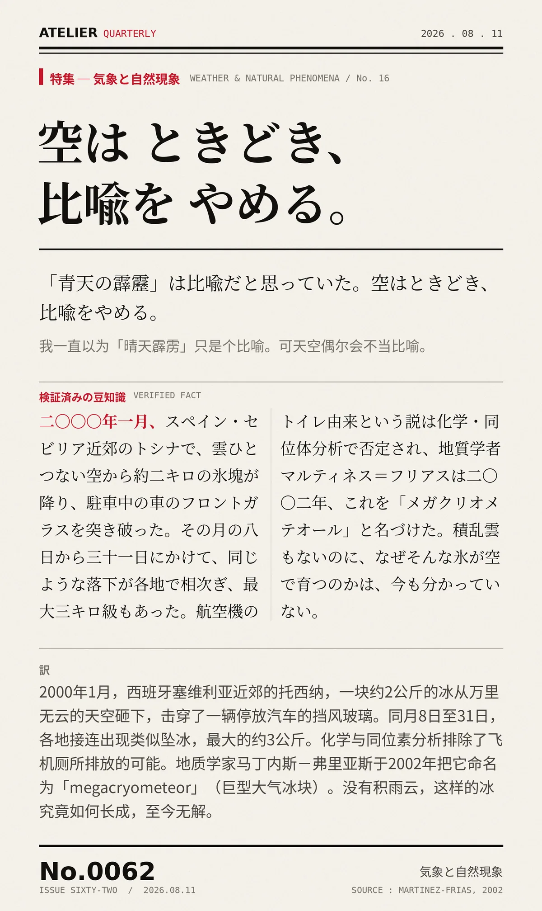

「青天の霹靂」は比喩だと思っていた。空はときどき、比喩をやめる。（我一直以为「晴天霹雳」只是个比喻。可天空偶尔会不当比喻。）
二〇〇〇年一月、スペイン・セビリア近郊のトシナで、雲ひとつない空から約二キロの氷塊が降り、駐車中の車のフロントガラスを突き破った。その月の八日から三十一日にかけて、同じような落下が各地で相次ぎ、最大三キロ級もあった。航空機のトイレ由来という説は化学・同位体分析で否定され、地質学者マルティネス＝フリアスは二〇〇二年、これを「メガクリオメテオール」と名づけた。積乱雲もないのに、なぜそんな氷が空で育つのかは、今も分かっていない。（2000年1月，西班牙塞维利亚近郊的托西纳，一块约2公斤的冰从万里无云的天空砸下，击穿了一辆停放汽车的挡风玻璃。同月8日至31日各地接连出现类似坠冰，最大约3公斤。化学与同位素分析排除了飞机厕所排放的可能。地质学家马丁内斯－弗里亚斯于2002年将其命名为 megacryometeor。没有积雨云，这样的冰究竟如何长成，至今无解。）
冷知识由执笔的模型自行查证。逐条断言、来源与所引原句存档在纯文字副本里，未经程序逐字校验，留作事后核实。